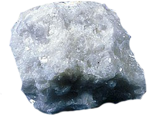

|
Material
Roca metamórfica derivada de la roca caliza compuesto en su mayor parte del mineral calcita, la fuente original es la sedimentación del carbonato de calcio en forma de restos de animales microscópicos o materiales similares. La roca caliza así formada sufre un proceso metamórfico en condiciones adecuadas de presión y temperatura. La intrusión de distintos materiales, como óxidos metálicos, altera la composición y el color del mármol, que de otra forma es blanco.
Cualidad
Presenta como cualidad destacada una superficie traslúcida en un grado tal que la asemeja en cierta forma al aspecto de la piel humana, dando a las esculturas de una profundidad visual bajo su superficie que permite un notable "realismo" o verosimilitud en las representaciones de figuras humanas. Otras grandes ventaja es la mayor finura de la granulometría y la relativa facilidad en su talla, que permite detalles mínimos (como representar cabellos) y pulimento (hasta las texturas más finas). A medida que transcurre el tiempo, las esculturas se hacen más sólidas y durables, y es más resistente a la erosión física que otros materiales, resistiendo mejor el agua excepto cuando es ácida.
Herramientas para esculpir
También se utilizan distintas herramientas y materiales para la obtención de distintas texturas en el acabado, incluyendo escofinas, limas, lijas ( lo más indicado es la piedra pómez y el esmeril) y productos abrasivos; y en algún caso se usan incluso colorantes.
Para la excavación profunda se usa el taladro. El "calado" que permite la técnica del trépano, una especie de berbiquí que socava desde un lado el interior, dejando intacta la superficie, proporciona efectos de luz y sombra que se utilizan especialmente en la decoración escultórica de elementos arquitectónicos en el arte bizantino y el arte islámico.
Asi obtienes
Fountain Diana, La figura semi-reclinada se ve con un brazo alrededor del cuello de un ciervo orgullosamente sosteniendo su cabeza. La acompañan sus perros, Phrocyon y Cyrius, claramente representados como un galgo y un perro de aguas. Ella no lleva su atributo habitual, la luna creciente. Esta figura de Diana recuerda instantáneamente la Ninfa de Fontainebleau (Louvre), un alto relieve esculpido por Benvenuto Cellini para Francis I. Philibert de L'Orme lo había instalado sobre la entrada principal del Castillo de Anet a mediados del siglo XVI, transformándose la ninfa en Diana, la diosa de la caza.
Sin ser un retrato real del favorito real, la figura ciertamente evoca a Diane de Poitiers, amante del castillo. La pintura de Diana la Cazadora (Louvre) de un artista de la Escuela de Fontainebleau también traza paralelos entre las dos Dianas, y la diosa se representa de manera similar desnuda. En el alivio de la Ninfa, Cellini había especificado que el ciervo representaba a Francisco I. Es tentador pensar que el ciervo aquí simboliza a Enrique II, el amante real de Diane de Poitier.
Acompañada de sus dos perros, un galgo y un perro de aguas, Diana, la diosa de la caza, se reclina con su brazo alrededor de un majestuoso ciervo. Esta escultura una vez superó una fuente monumental en los terrenos del Castillo de Anet, construido por Philibert de L'Orme para Diane de Poitiers, la amante de Enrique II. La silueta alargada y desnuda de la casta diosa, cuya belleza siempre había sido admirada, se convirtió en un símbolo del Renacimiento francés.
|
|
 |
 Técnicas
Técnicas